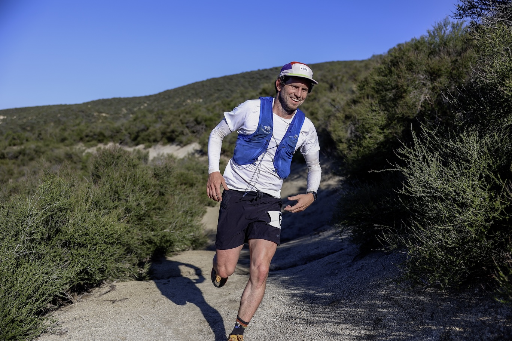

In my non-academic life, I’m a lifelong athlete. I played soccer as a kid, ultimate frisbee for most of my early adulthood, and since 2020 I’ve been an increasingly avid runner. I started with a mile, then a 5k, then a 10k, and, well, you know how it goes after that. As of 2024, I’ve run three marathons (two successfully, one not so much), three 50ks, and a 100k (pictured below). And for a 38 year old dude with little running background, I’m reasonably competitive. My best marathon was at Boston in 2023, where I ran a little over 2:40, and I can sometimes occasionally sniff the podium at local trail events.
Nobody is going to pay me to run, but running and the run community here in Vancouver has become an important part of my life. And I’ve been pretty lucky injury-wise, too. I’ve never been sidelined for more than a couple of months despite running 50-70 miles per week during heavy training periods. Until now.

After an increasingly painful year where I curtailed my training considerably but continued to compete in long-distance running events, I finally received a diagnosis: I have a complex medial meniscus tear in my left knee, and substantial cartilage damage in both the patella and medial compartment areas. I’ve been told that it is unlikely I’ll be able to run again.
This series of blog posts is my own reflections on my journey to understand my knee injury, to explore every possible avenue for treatment, and to document my progress. I’m calling it “The Knee Project”. The end goal of the project is to either run without pain, or to satisfy myself that I’ve tried everything I could before hanging up my (many, many pairs of) running shoes for good. I haven’t decided if I’ll post it publicly yet, but I find it useful to write things down and to make it public-ish. I’ve also found that as a patient in the Canadian health care system, I face long queues and limited time with doctors and other medical professionals. Even when I do get to see them, I find that some my specific questions and concerns go unaddressed. I’m hoping that by working through this in this forum will allow me to document my progress, articulate what I’ve learned and what I still want to know, and perhaps by doing those things someday be a helpful for resource for others in my position.
Let’s get to it. Here’s the backstory.
Backstory
In early 2021, I began running seriously. I wanted to run under 5 minutes for the mile (here). Shortly after, I decided to run a 5k time trial. This is the first I remember of the knee pain. I ran the 5k (still my PR), and then had knee pain that took me out for a month.
I came back and returned to training, building to run Eugene as my first marathon in May 2022. Everything went well: I probably averaged 50 mpw, with a couple weeks in the high 60s and even low 70s. I don’t remember any issues with the knee during that build.
In fact, I don’t remember any knee issues whatsoever through any of the next training cycles: I had a couple of foot problems along the way, including one in the left leg, that may have led me to offload my foot in a funny way. I have a tendency to pick my foot up by rolling it up and out. It’s actually not obvious to me that that would affect the medial aspect, though. Still, I ran Boston 2023 and a couple of 50ks without much issue. I felt resilient. I thought I was above getting injured: I trained smart.
I targeted CIM 2023, planning to build to run a PR. I was in close-to-PR shape. I remember running a 10 mi tempo at around 6 minutes per mile in Bellingham (with Mom!) and feeling like I was on track. But my knee had begun to bother me throughout the build. I felt stiffness and I distinctly remember not being able to lift my leg up to my but without help. So there was clearly swelling already. I don’t remember having pain in the medial aspect at that point. And I ran a lot. I probably averaged in the 50s again, with a week or two higher.
CIM did not go as planned, though. My effort was higher than I wanted, but more importantly I got a stress fracture in my right 4th metatarsal around mile 17. I hobbled it in and rested for 6 weeks.
When I resumed training in January 2024, I had an explicit goal of avoiding knee pain while building for a 50k and a 100k. I did not succeed. This is the first time I remember the knee starting to limit me. I felt I couldn’t do two big days in a row without severe pain and discomfort. After Chuckanut 50k I was hobbling for days. Still, I trained up to Leona Divide through pretty serious knee discomfort. I remember walking 5 minutes on the UCSB campus a few days before the race, just hoping things would calm down. This is when I first began keeping the knee pain log. I ran Leona 100k, it hurt some but not so much that I needed to stop. I felt my main limiter was my lack of long double days in the mountains.
After Leona I took a full week off, followed by a steady return to training as I made my way back to BC. Things seemed not great. I was training through achiness, thinking that it would make me better. My kneecap pain started to appear in June. I also felt some sharp medial pains in June. Still, I ran 25 miles at the Raven 50 and the uphill leg at Buckin’ Hell. In July I started to notice more irritation after standing. I ran Squamish 50k in the middle of August.
It really seemed to take a turn for the worse around the time I got hit by a car in September. I felt like it just couldn’t recover. Which I attributed to the accident, but it retrospect it may have been just part of the larger pattern. I would build up slowly, get discouraged by increasing pain, set to a lower level, build up again, get discouraged, etc. I am now on cycle 4 or so of that this year, resetting again to ~15 mpw to see if it can feel OK again.
This fall I also finally got into see a sports med doctor at UBC. In our first meeting (which took 8 months to arrange), we spoke for 15 minutes and he told me I should just stop running for 6 months. He also scolded me for being interested in getting imaging done, on the grounds that I was clogging up the queue for other people. In short, he has been anything but a partner in figuring out how to align my goals with my health status.
I did finally get an MRI after pushing for it and getting myself on the UBC Hospital wait list. This was a blow: I found out I have a complex meniscus tear with some significant cartilage damage in both the medial compartment and under the patella. The same sports med doctor again ruled out surgery and said that I would almost certainly need to stop running. I also wrote a friend who is an orthopedist in the states, who said that if I were a surgical candidate based on pain, they would advise either A) a meniscus repair (or trim if repair not possible) + some sort of procedure to transplant or regrow cartilage or B) a high tibial osteotomy if it seemed my problem had to do with my slight bowleggedness.
I am barely running at this point, and keenly aware of any soreness. But in some ways it is more mobile than it has ever been. I can easily lift my leg up to my butt. However, it is now much more likely to get sore from standing, or walking a bit. And it can be hard to predict what will trigger the soreness/inflammation. And I’m not sure how worried I should be about it. I’m working with a new PT and trying to get a second opinion from a different sports med doc. The new PT is trying to have me change the way I use my left leg, since it seems like I’m offloading it in a weird way.
What I’ve learned so far
Current open questions
What I’m very keen to figure out now—and what I haven’t been able to get many clear answers on—is how to interpret the signals my brain gets from the knee. Is soreness or pain during a run bad? What about after? For how long? What indicates damage and what does not indicate damage?
I’m also out on the edge of medical science in terms of what actually repairs cartilage. The received wisdom is that basically nothing does, but there is some very speculative evidence that PRP and/or stem cell injections MIGHT.
Other open questions have to do with whether I could even get a cartilage transplant (from myself or a cadaver) here in Canada through the public health system. Or should I be pursuing private care (a politically complicated topic.)